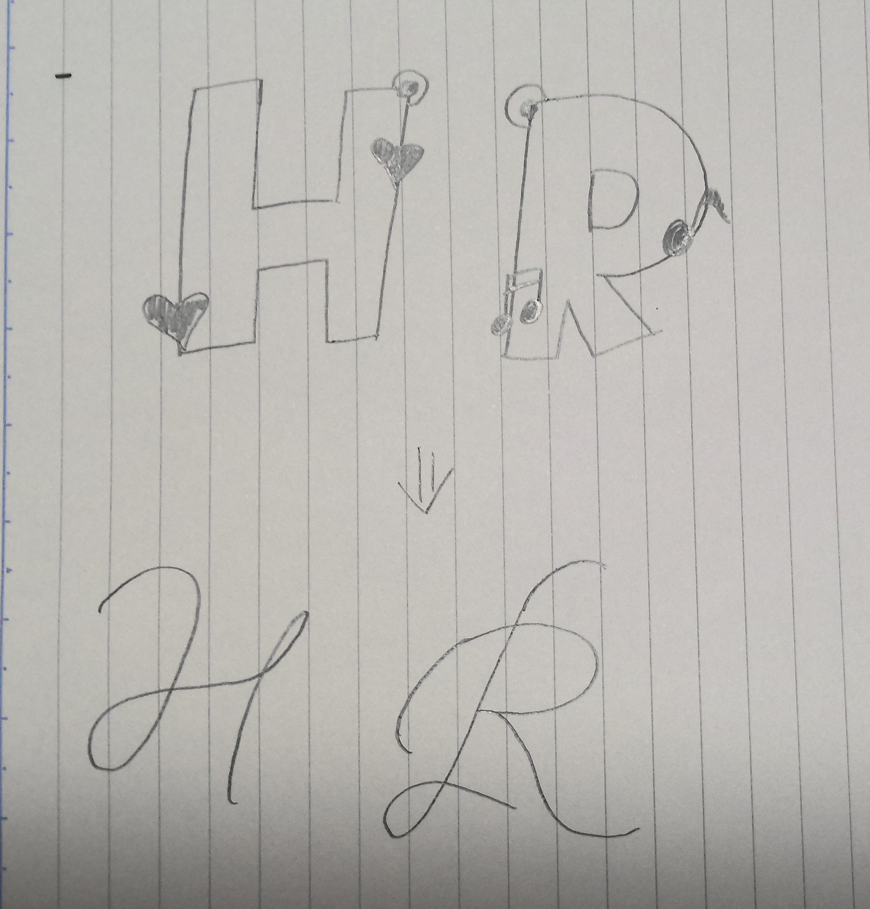
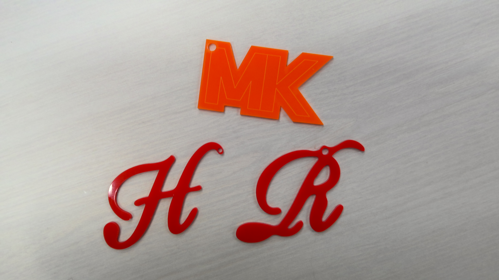

最終課題
１．イニシャルチャーム
2.手書きスケッチ

3.実際に作った写真

4.設計ファイル
ファイル
５．作品の説明
筆記体のアルファベットのストラップで、アクリルをレーザーカッターで作成したものです。
６．なぜこの作品を作ろうと思ったか
友達と一緒に普段使いできるものを作ろうと話をしてストラップを作ることにしました。
最近街中でイニシャルチャームをしている人をよく見るので、自分だけのイニシャルチャームを作ろることにしました。
８．感想
サイズ感もちょうどよくできました。いろんな形やデザインを変えることでもっと楽しむことができるのではないかと考えましT。プレゼントするのにも使いやすくてかわいいのではないかと思いました。
班のメンバー
tks